Today’s Agenda
II. Evaluating Policy Design Options
Justin Leinaweaver (Spring 2024)
Prep for Class
Publish discussion board for next class
Assignment 4
Getting Involved in our Community
Find or create an opportunity to get actively involved in your issue locally (e.g. litter pickup, river cleanup, working with a local NGO or city agency on your issue, etc.)
Write a report describing what you did, who you worked with and what you learned that will help you with solving your chosen policy problem.
Reminder, you have until April 26th to complete your community involvement piece of the project.
Don’t let this fall off your radar
don’t forget you must get my sign-off on the proposal as a Canvas assignment!
Spring Break is coming up and that’s often a great time to get involved outside!
Questions on this assignment?
Section 2
Evaluating Policy Design Options
Command & Control Regulations
“Green” Taxes
“Green” Subsidies
Adaptive Governance
Last week we explored command and control regulations.
In broad strokes, what does it mean to use C&C regulations to address an environmental problem?
In Econ 101 speak, per the textbook: C&C means using rules to force polluters to adapt their production functions to the social costs of pollution
SLIDE : What does that mean? Back to the picture!
The equilibrium point, where the lines cross, maximizes your profit!
The point where you balance the marginal costs of production against the demand of your customers at a given price point
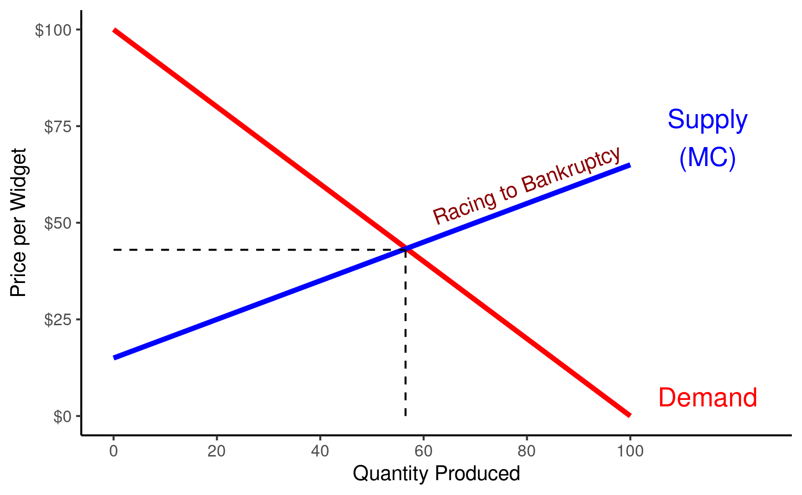
Marginal cost per widget goes up SO you have to charge more for each of them, BUT consumers don’t want your widgets at those prices
You are now losing money (in ever growing amounts) for every extra widget you produce
So, push up the line and go bankrupt!
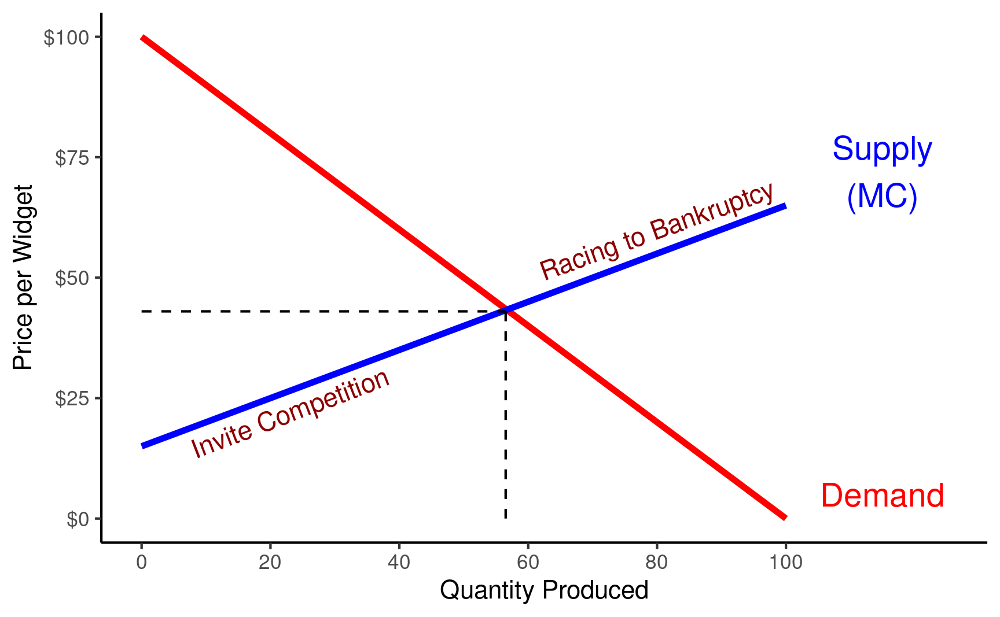
(You’re leaving profit on the table, and)
(You’re daring other companies to come into your market in order to meet the consumer demand!)
The key for us here is to acknowledge how powerful the equilibrium point is for determining the behavior of the factory!
The equilibrium point will be somewhat self-enforcing!
Now then, what happens if we add a C&C regulation requiring new, cleaner technology be added to the factory?
Rules that mandate emissions limits or the specific technology a factory has to use increases the marginal costs of production.
This shifts the equilibrium point to the left
The results: The factory will produce fewer widgets, the price for widgets goes up and the amount of pollution created goes down
And remember, this is not always a net negative for the economy!
Regulation design matters!
Higher costs can inspire innovation and efficiency
New products can come online to replace the older, dirtier widgets
Higher costs and unmet demand can inspire competition
Any questions on the basics of the approach?
Last week we explored this approach to environmental problem-solving using case studies, opinion pieces and reviews of empirical research.
Bottom line, what do we, as policy-designers, need to keep in mind if we chose to address an environmental problem with command and control type regulations?
Piggy-back on established institutions for support in oversight and enforcement
Useful especially if the problem is particularly dangerous or time horizons are VERY long
Be careful of economy wide effects (overall effect on the economy is hard to predict, could grow or shrink depending on many other factors involved)
Must be paired with assistance for impacted workers?
Be careful of political interests in the design (lobbying and/or protection of well connected industries)
Regulations have got to keep up with changes in the market and technology (no drift!)
Depends on balance of “dirty” vs “clean” industries in the target economy
C&C most realistic if changes are small OR industries carefully targeted?
Enforcement at the individual level is hard if community doesn’t buy-in
In terms of your projects, is anybody leaning towards C&C so far? Why?
Has anybody ruled it out completely? Why or why not?
Policy Design: “Green” Taxes
This week we shift to your next policy design option: “Green” taxation policies (12.3 Market-Oriented Environmental Tools (OpenStax 2016) )
Let’s talk textbook treatment of the approach first.
Note that the textbook chapter also explores marketable permits and property rights as other ways to use the market to address pollution.
We’ll focus this week just on the tax piece: “Pollution Charges”
In super broad strokes, what does it mean to use a tax to address an environmental problem?
(Apply a charge to some behavior (emitting pollution) forcing the polluter to consider cutting back on those emissions)
(Instead of mandating a specific technology or emissions limit with a rule, use a tax to make some of the costs of the pollution you create part of your production function)
Like last week, let’s walk through some of the key elements of this mechanism before we dig into the political arguments about it.
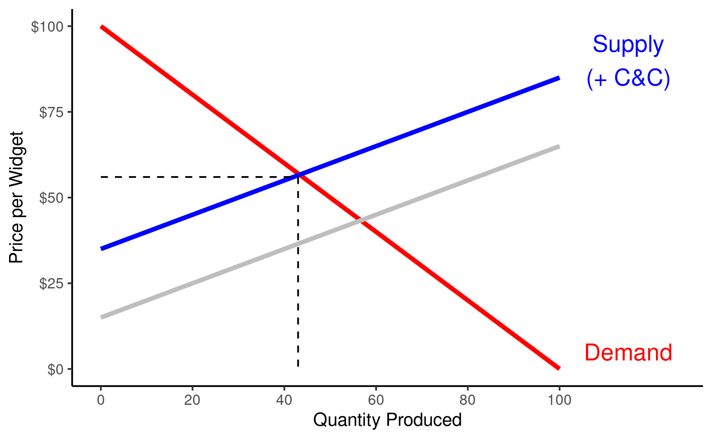
Let’s root ourselves back in the logic of how a C&C regulation increases the marginal costs of production.
HOWEVER, it turns out that:
Not every factory has the same slope on their supply curve, and
It can be really hard for the government to know what the “right” regulation should be
SLIDE : Let’s now try thinking about factories as engines of pollution
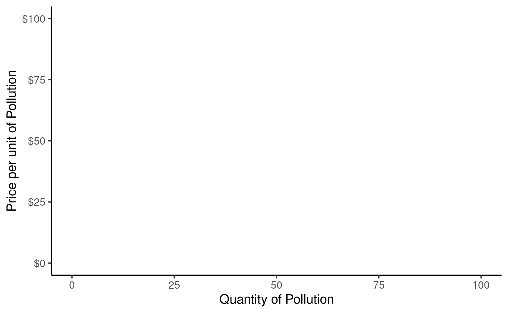
In a sense, we don’t actually care how many widgets a factory makes.
Our interest is in how much pollution they make and what it would cost to reduce it
This plot represents the pollution behavior of a single firm (e.g. widget factory)
SLIDE : Let’s start with a baseline of zero regulations or taxes on pollution.
The Basics of Taxing Pollution
Let’s put our two plots side-by-side so we keep the story clear
The blue dot on each plot represents the current baseline for the factory
On the left, the production dot is at the equilibrium between supply and demand
On the right, the production dot is at 100 units of pollution
So, we begin this hypothetical with a factory producing 57 widgets and 100 units of pollution
Make sense?
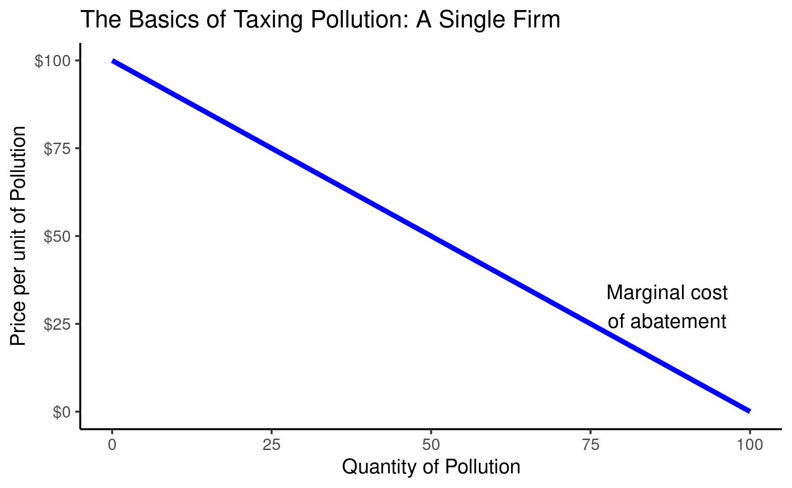
The first thing we need to estimate is the factory’s marginal cost of abatement
The line tells us how much it costs the factory to reduce its pollution by one unit at a time
Moving from right to left represents the cost of eliminating one more ton of emissions
e.g. adopt new technology, better processes, swapping components, etc.
Cost is super low at first, but becomes higher and higher as emissions approach zero.
SLIDE : For example…
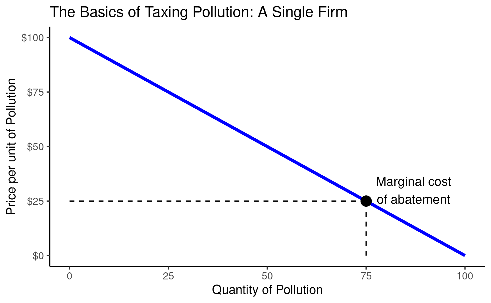
Each point on the curve is the marginal cost so corresponds to a 1-unit change in pollution
Example: If we wanted to cut the factory’s 75th unit of pollution (e.g. down to 74 units) it would cost $25
SLIDE : Example 2
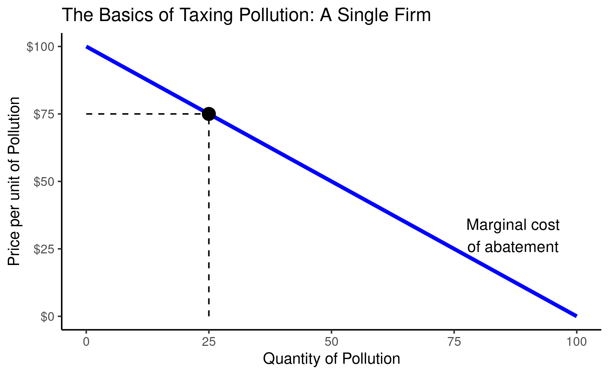
At the other end the costs go up dramatically
Example: If we wanted to cut the factory’s 25th unit of pollution (e.g. down to 24 units) it would cost $75
Does it make sense that the marginal cost of abatement has a negative slope? Why?
Force the class to explain the intuition
If this plot is meant to help us think about the costs of pollution then this is only half of the equation.
Who in society also pays the costs of the pollution produced by this factory?
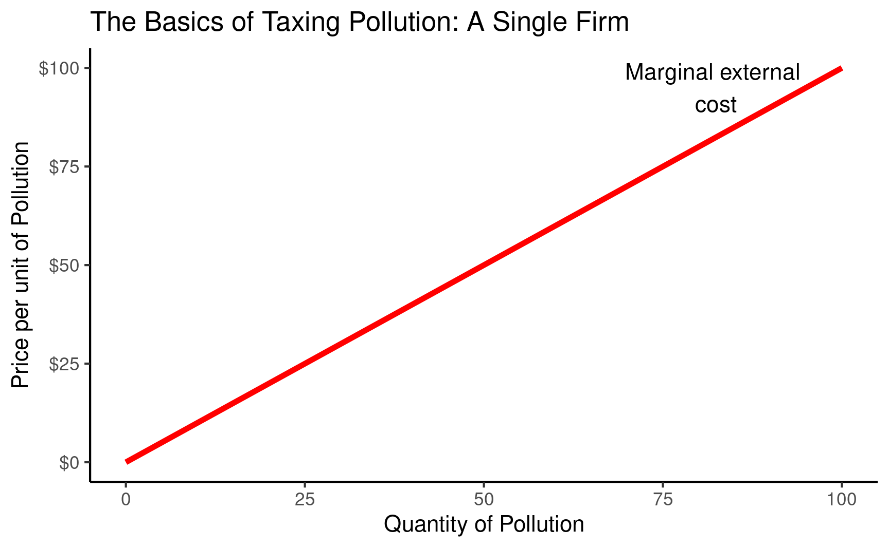
This red line represents the marginal external cost of the pollution.
Can anybody tell us what this means? How to read this line?
The marginal external cost of the pollution estimates the harms done by the factory’s pollution - e.g. smog leading to more asthma cases and heart attacks, river pollution killing fisheries, etc
Why is the slope of the line positive?
The cost is assumed to rise as emissions increase
A tiny bit of pollution is hardly noticeable, but as it increases so too do the harms
SLIDE : Example
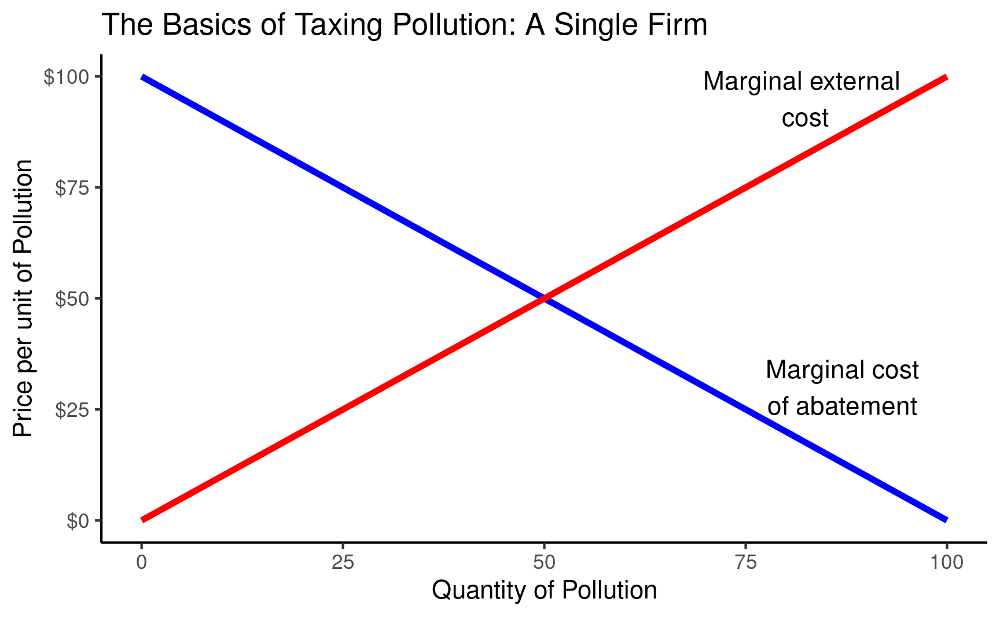
So, these two lines represent the pollution problem from both the factory and societies’ perspectives.
You will not be shocked to discover that many economists argue our goal should be to reduce pollution to the equilibrium point between these two lines!
SLIDE : Let’s examine how a green tax works as a way to understand the argument in favor of the equilibrium
The Basics of Taxing Pollution
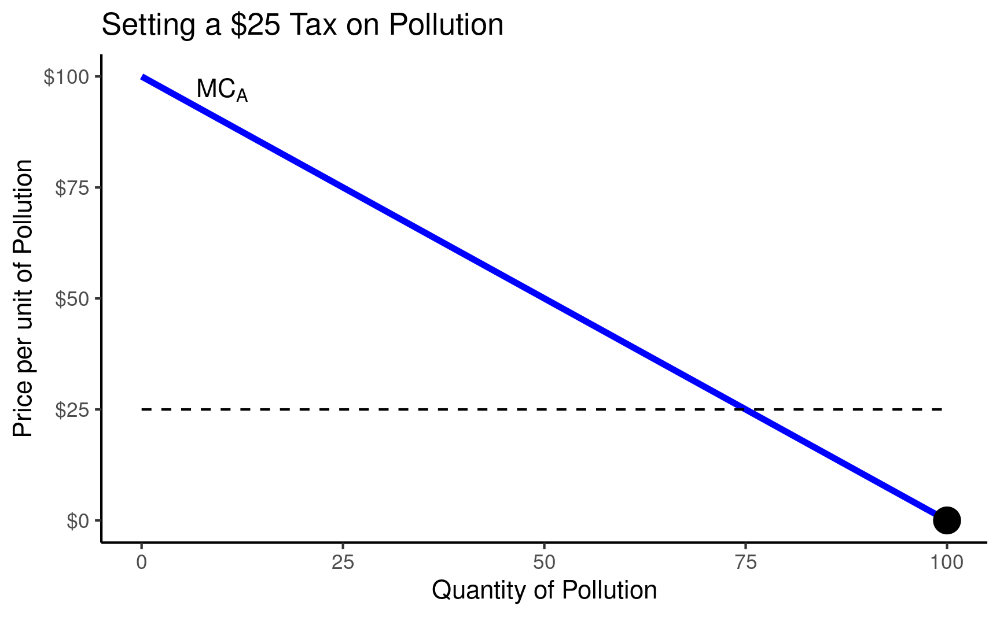
Imagine we place a $25 tax on EVERY ton of pollution produced by this factory.
Here I’m focusing just on the effect of the tax on the factory as determined by its marginal cost of abatement.
Remember, we’re beginning at our baseline which is that the factory is emitting 100 units of pollution.
So, according to this marginal cost of abatement curve, how much does it cost for the factory to reduce its pollution by 1 unit (e.g. move from 100 to 99 units)?
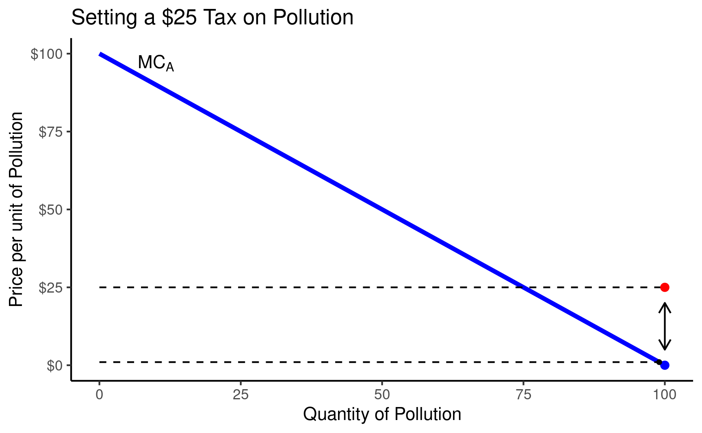
Hard to see, but a decrease of this 1 unit of pollution costs the factory $1
Focused just on the 100th unit of pollution, if you’re the factory owner would you rather pay the $25 tax or spend $1 to make your factory cleaner?
(Cleaning up your act is cheaper at the 100th unit)
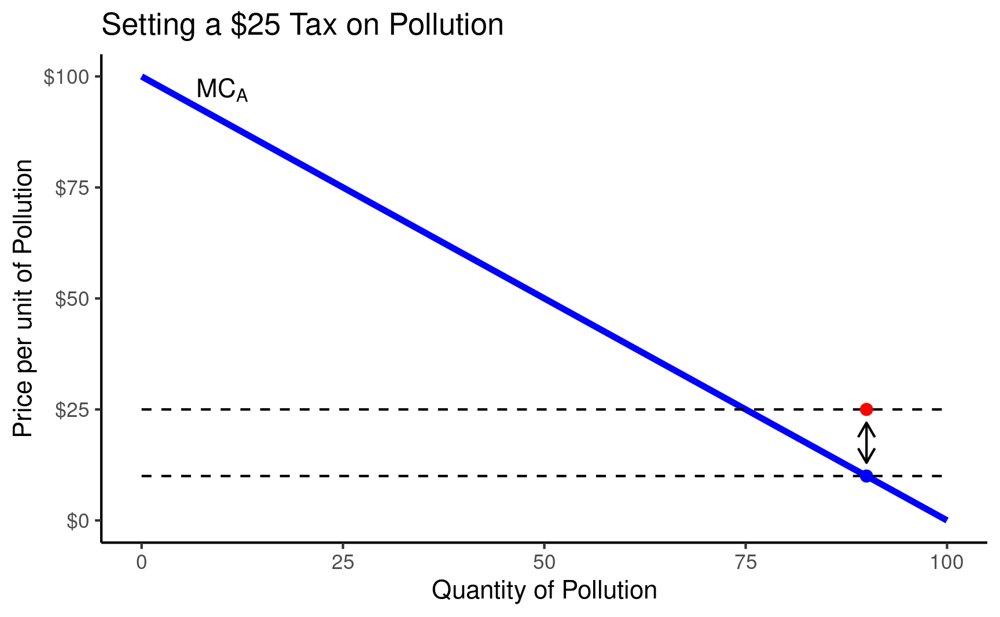
Humor me and let’s keep tracking the logic.
As we move up the curve, cutting pollution gets more expensive.
Would you rather pay the government $25 to emit the 90th unit of pollution or spend $10 to make your factory cleaner?
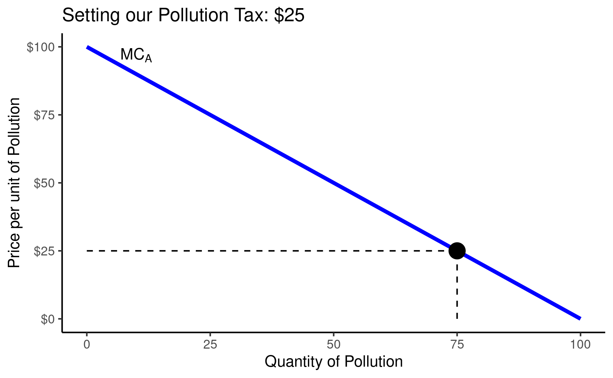
We can follow this logic to this point.
Up to this point it is cheaper to improve your factory rather than pay the tax
However, beyond this point the trade-off flips
In order to cut your pollution from 75 units to 74 units presents a choice of either paying the government $25 or spending $26 to clean up your factory more.
From this point forward the tax is cheaper than improving your factory and we expect the cuts to stop
Everybody with me on this?
SLIDE : Let’s now switch to the other line and think about how much benefit society gets from cutting pollution at the extreme end
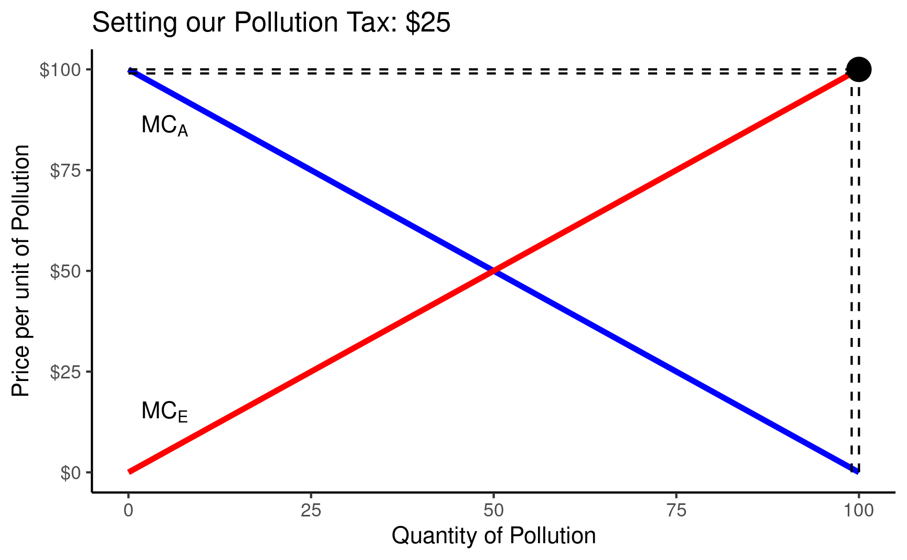
A 1 unit decrease at the highest level is worth $100!
Remember this is a marginal cost curve
Society pays $100 for the 100th unit and $99 for the 99th unit
If we don’t have the 100th unit of pollution, we don’t pay the extra $100 of costs
This is the direct reverse of what the factory faces at this end of the curve
Does that make sense?
SLIDE : Ok, let’s put this all together
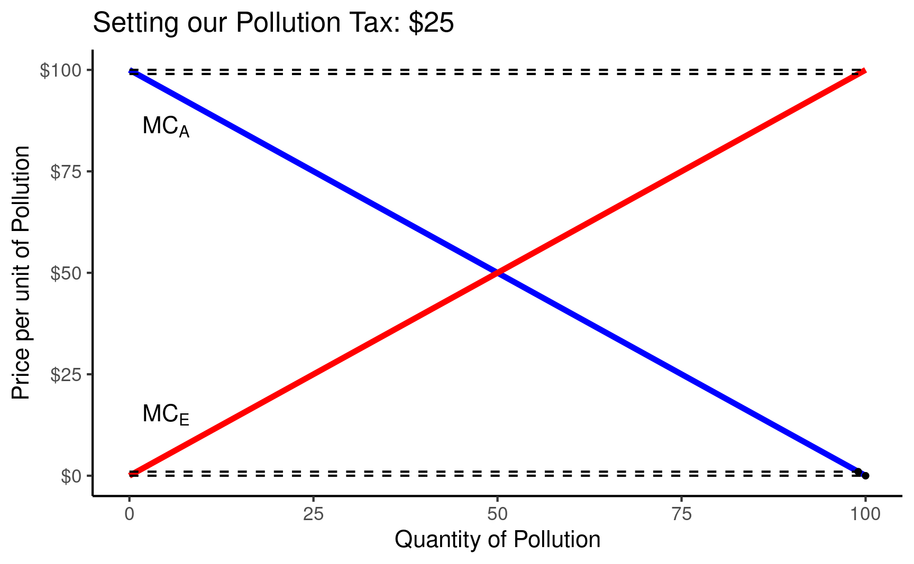
This presents the societal trade-off in stark terms
At the extreme end of the pollution curve the choice is a simple one
The factory can cut the 100th unit of its pollution down to 99 units for only $1
Doing that removes the 100th unit of pollution which currently imposes $100 in harms on our community!
That’s a trade of $1 for the factory to get $100 for society!
Make sense?
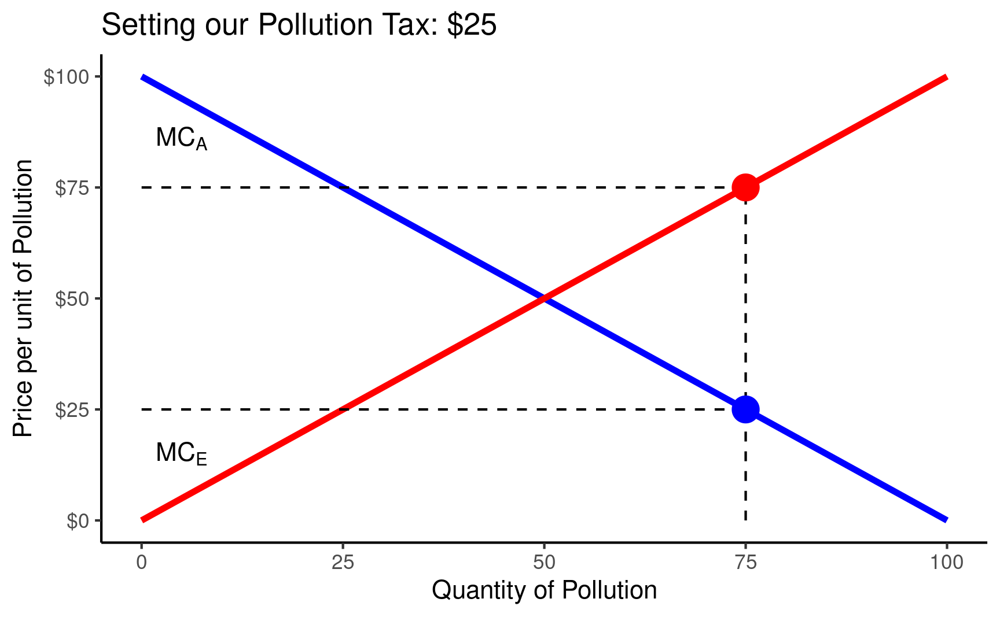
That brings us full circle to the result of a $25 “green” tax operating on the factory
At this level the factory emits 75 units of pollution and society pays $75 in costs for that final unit of pollution
Why is this a worse outcome for society than pushing both dots to the equlibrium point?
- In other words, why is a $25 pollution tax not big enough?
You can see it clearly in the costs on the y-axis
At the 75th unit of pollution the factory pays $25 BUT society pays $75!
In other words, this tax treats the factory as THREE times more valuable than society
This set-up encourages us to think about how every widget the factory produces is actually paid for BOTH by society AND by the factory!
This means not applying a tax or setting a very low tax is explicitly deciding that society matters less than a widget factory.
Does everybody understand this intuition?
SLIDE : Let’s take it too far!
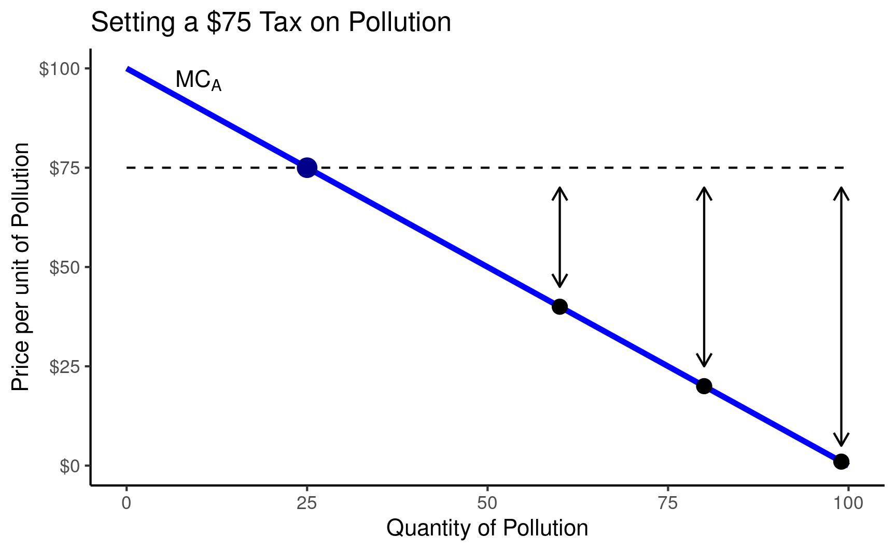
The $25 pollution tax leaves society accepting 3x the harms of the benefits being created.
So, we impose a $75 per unit tax on pollution and cut 75 units of pollution!
At each step from 100 units of pollution down to 25 the cost of improving your factory is less than the tax
So you invest in your factory and society gets less pollution.
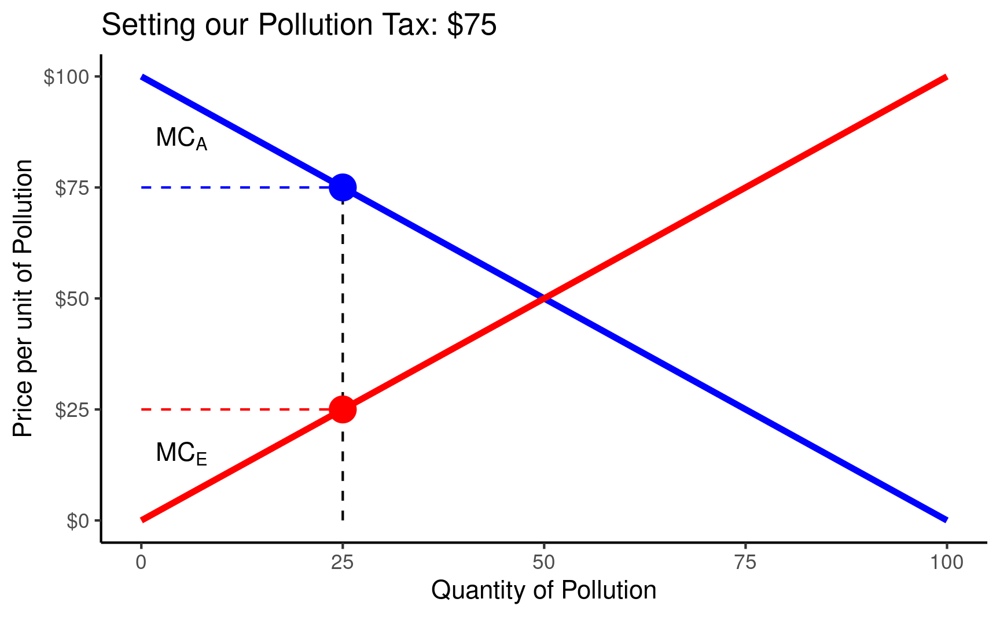
Why would economists argue that this is equally “wrong” as a policy outcome?
- Why does the market wisdom object to this balance of costs and benefits?
We’ve reversed the imbalance, but haven’t necessarily made things any better!
Remember, the production of the factory is needed for the local economy to function!
The factory means jobs, growth, tax dollars for public goods, etc.
In terms of economic efficiency, the factory is now spending WAY more on harm reduction than society will benefit.
At this level of pollution tax the factory is paying $3 in costs to provide society only $1 in benefit!
Does this make sense?
(SLIDE : The “market” wisdom solution = A Pigovian tax)
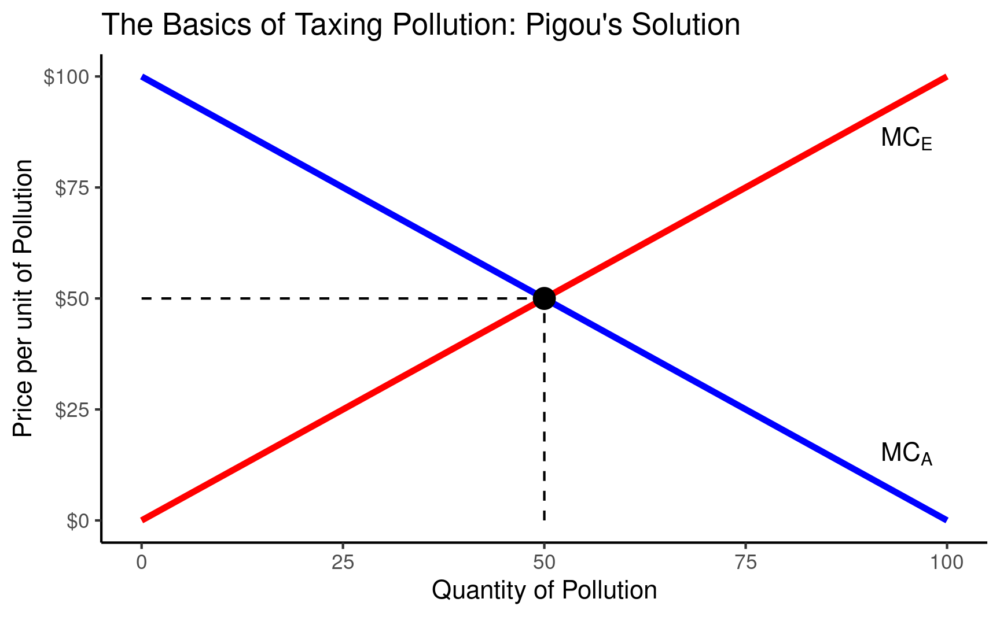
Early 20th century British economist Arthur Pigou proposed a tax focused on the equilibrium point between these two curves.
A Pigovian tax reduces the externality to the point where the marginal costs to society equals the marginal costs to the factory.
Anywhere to the right of that point, the harms to society outweigh the benefits to the factory.
Anywhere to the left of the intersection, it would cost more to eliminate a ton of emissions than the harm that additional ton would cause.
Pigou’s aim was achieving an “efficient” economic outcome when determining the “optimal” pollution level in our community.
Any questions on what we’ve covered so far?
Split class into three groups
Go sit with your group and claim space on the board!
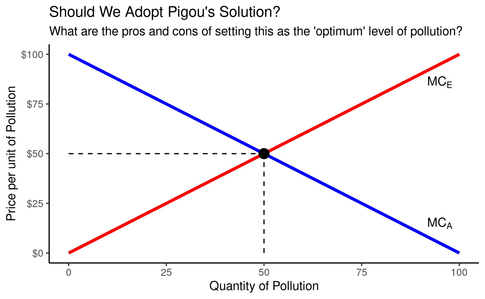
Groups, I’d like you to evaluate Pigou’s solution as a piece of policy advice.
On the board make a pros and cons list of using this equlibrium point as the optimum level of pollution in our community.
Questions on the task?
Go!
PRESENT and DISCUSS each
FIRST, estimating marginal costs curves is REALLY hard - What is the value of a human life?
SECOND, is $1 of societal harm always worth $1 of economic benefit? - e.g. is the value of one more beanie baby equal to five more childhood asthma cases?
THIRD, what about inequality in the distribution of the harms? - Where is this factory located?
WHO is doing the suffering?
FOURTH, what if the marginal external cost curve is not linear? - This curve assumes an unending Earth, but…
What about tipping points and irreversibilities?
SLIDE : Let’s go a bit deeper into the utility of “green” taxes by exploring a case study that impacts all of us
“Green” Tax Case Study: The Gas Tax
As a case study, let’s talk about the “green” tax you probably experience the most: the gasoline tax
This refers to the taxes you pay for every gallon of gas you buy
To be clear, this tax impacts everyone not just those who own a car
Your groceries and Amazon deliveries all move by truck, trucks use gas and so the prices you pay for everything are impacted
What is the policy justification typically made for gasoline taxes?
- In other words, how do governments typically frame driving as a public problem requiring a collective decisions (e.g. a tax)?
Gas taxes are frequently justified as a “use” tax
Driving on the roads damages them so those who drive the most (use the most gas), should pay the most in upkeep
This is why diesel trucks almost always pay higher tax rates (they do more damage to the roads)
“Green” Tax Case Study: The Gas Tax
This “use” tax problem framing is different from the logic we have been exploring so far in class.
Refresh my memory, what is the argument for a gasoline tax focusing on the MC_E and MC_A curves?
(Aim is to balance the costs to the driver with the harms done to society)
In green tax logic it is meant to force you to consider some of the social harms caused by your car when deciding how much to drive.
Big picture, what options does a person have for reducing the amount of the tax they pay?
What I hope you can see from this list is the options are varied in terms of their appeal to you personally.
This is an important point we need to dig into
“Green” Tax Case Study: The Gas Tax
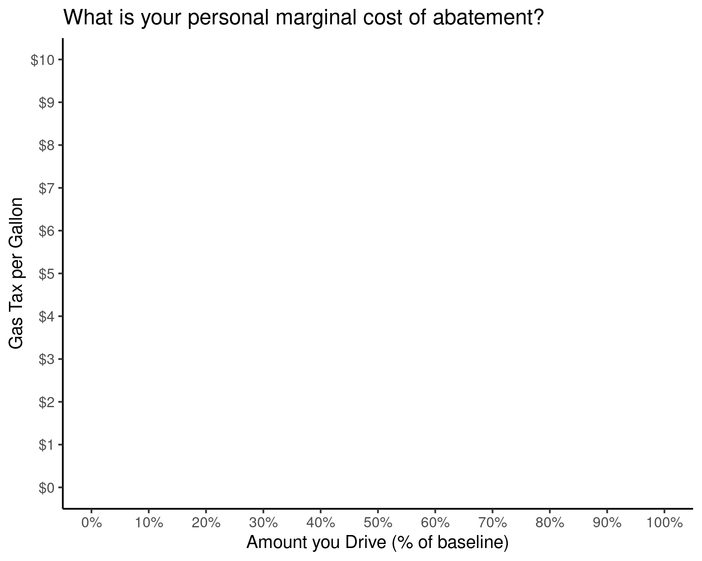
What I’d like each of you to do is to draw your personal marginal cost of abatement curve
e.g. I want you to estimate how sensitive you personally would be to increases in the gas tax
I’ve tweaked the plot axes to make this a little easier for you
The x-axis tracks the amount you drive as a proportion of your baseline (e.g. current driving) - For those who don’t have a car, feel free to keep this hypothetical
The y-axis is a gasoline tax for every amount from \(0 to 10\) per gallon
To clarify this, what would your marginal cost curve look like if you were insensitive to price?
- e.g. you plan on driving 100% of your baseline NO MATTER WHAT?
“Green” Tax Case Study: The Gas Tax
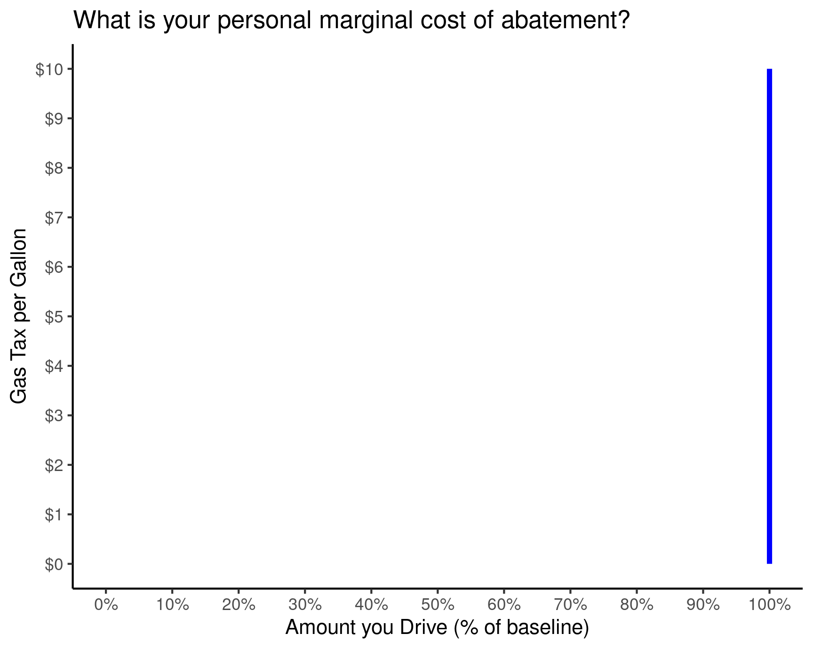
Does everybody understand what this line indicates?
Why might somebody have this as their personal MC_a?
Highest possible need (sick family member needing drives to hospital)
Super high personal wealth
Electric car
And what would the opposite look like?
- Describe the MC_a curve for someone who basically stops driving if the tax hits $1 per gallon
“Green” Tax Case Study: The Gas Tax
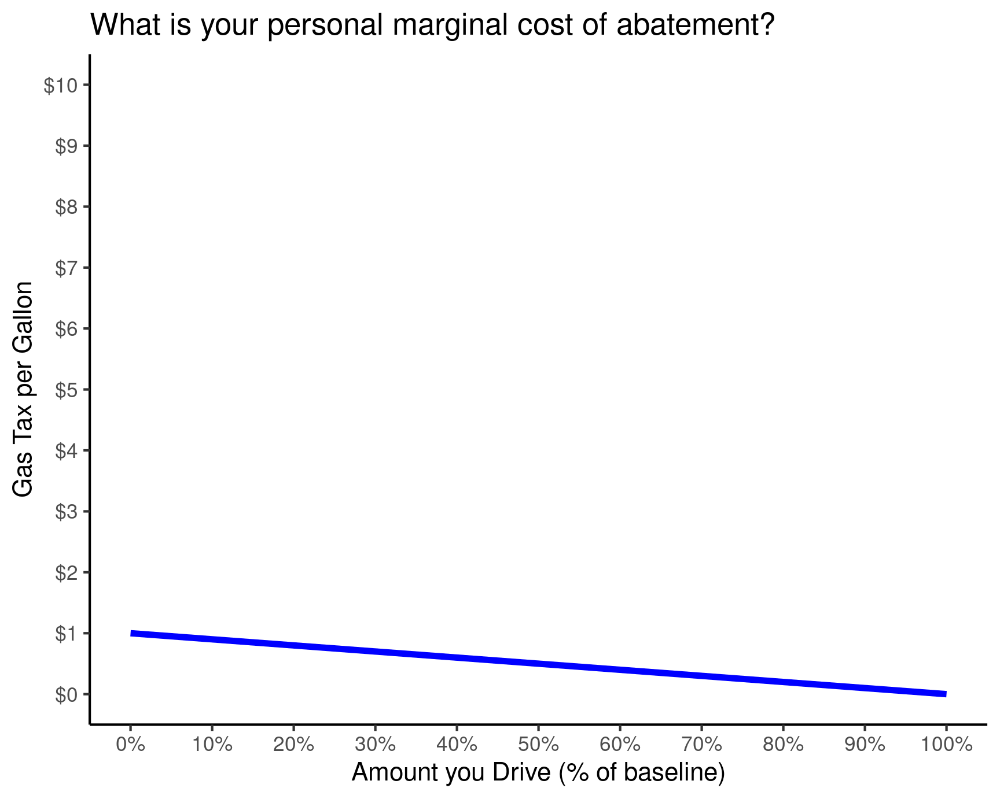
Does everybody understand what this line indicates?
Why might somebody have this as their personal MC_a?
Ok, everybody take out a piece of paper and draw their personal MC_a curve!
Walk around and check them out, select some different curves and have those students draw them on the board
PRESENT, EXPLAIN and DISCUSS each
Alright, some good variation here in our class.
Let’s compare this to the real-world!
What is the current federal gas tax rate?
(Every gallon of gas you buy includes 18.4 cents of federal taxes)
And what is the current gas tax rate in Missouri?
(Every gallon of gas you buy includes 24.5 cents of Missouri taxes) MODOT Link )
“Green” Tax Case Study: The Gas Tax
Add these together and you have a 42.9 cent “green” tax applied to every gallon of gas you buy in Missouri.
Per your marginal cost of abatement curves, how much does this 43 cent tax reduce your personal driving habits?
What does our current tax rate imply about who pays most of the costs for your driving?
- Is it you or is it society?
If it is society, why is that the right policy choice?
How on Earth do low gas taxes get presented as the choice that is more pro-freedom? Blows my mind.
Such an important example of how winning the “collective decision” argument is a powerful strategy for stopping environmental problem-solving
So, does any state in the US do this better than Missouri?
Any idea where that 24 cents per gallon puts Missouri nationally?
- Where do we rank compared to other states?
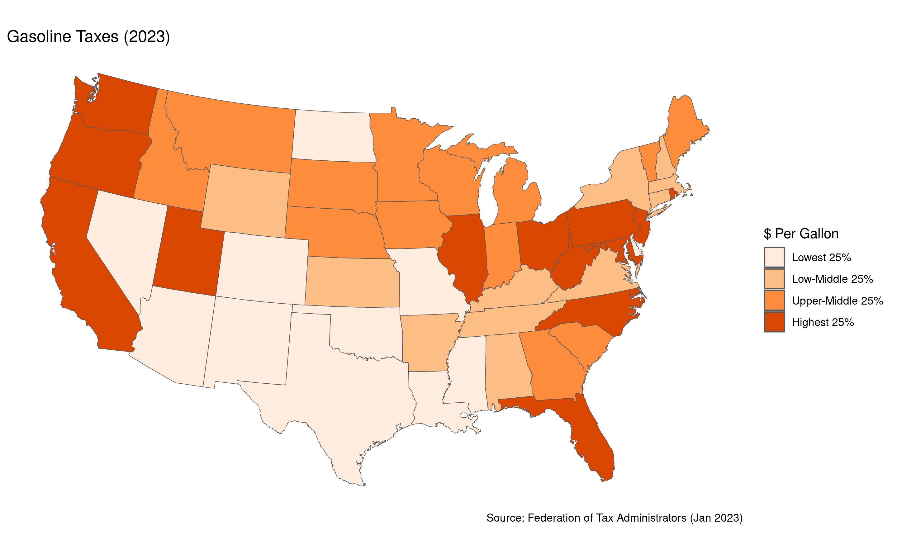
This map visualizes gas taxes across the country and ranks states by their level of the tax.
What would it take to actually change behavior for most people?
What are the individual characteristics that predict whether or not a gas tax would cause a person to use less gasoline as opposed to just paying the tax and keeping on the road?
ON BOARD
Price of the tax itself
Access to public transit
Quality of public transit
Price of public transit
Price of hybrid or electric vehicles
Access to charging stations for an electric vehicle
Tax incentives to buy an electric vehicle
?
Notes
FEDERATION OF TAX ADMINISTRATORS – JANUARY 2023 Current Rates Link
Min. 1st Qu. Median Mean 3rd Qu. Max.
0.0895 0.2381 0.2860 0.2991 0.3450 0.6290
“Green” Tax Case Study: The Gas Tax
Big Takeaways (so far)
FIRST, UNLIKE supply and demand, the pollution equilibrium is NOT self-enforcing. - Balancing the costs to the polluter and the wider society REQUIRES government action.
SECOND, EVERYONE has a different MC_a! -Different resources (wealth), different access to public transit, different proximity to work and shopping, different pressures (sick family member needing to get to a distant hospital)
SLIDE : These individual differences are what make “green” taxes such a useful policy option
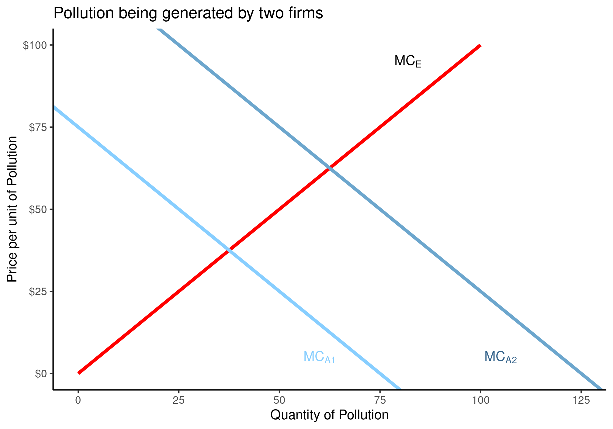
Carbon Pricing and Regulations Compared: An Economic Explainer by the Niskanen Center
Let’s simultaneously examine a country with two factories (econspeak = firms)
Key 1: Both firms have identical marginal external cost curves (e.g. their pollution impacts society in the same ways)
Key 2: HOWEVER, the firms have very different abatement curves.
Firm 1 emits less pollution and can cut pollution more cheaply than Firm 2
Remember, according to the “markets” wisdom the goal is to achieve pollution cuts while minimizing harms to our economy!
Baseline
Emissions = 75 (Firm 1) + 125 (Firm 2) = 200
Abatement Costs = 0 (Firm 1) + 0 (Firm 2) = $0
In a world without regulations or taxes each firm produces as many widgets as it thinks it can sell profitably
e.g. Produce at the equilibrium point between supply and demand
At the baseline:
Our society is paying the costs for 200 units of pollution (Firm 1 75, Firm 2 125)
The firms are paying nothing for these harms
Everybody understand these calculations?
Let’s now set a policy goal of cutting the pollution hitting society in half
e.g. Go down from 200 to 100 units of pollution from these two factories
Command and Control Regulation
Emissions = 50 (Firm 1) + 50 (Firm 2) = 100
Abatement Costs = 319 (Firm 1) + 2794 (Firm 2) = $3113
Option 1: Let’s implement a command and control regulation of 50 units of pollution per factory.
e.g. No factory is permitted to emit more than 50 units of pollution (50 + 50 = 100!)
Here we see the results of this regulation.
The area of the blue triangle is the cost of abatement to each firm.
What can you tell me from these plots?
This policy succeeds in cutting emissions in half
Remember, the baseline was 200 units of pollution total
The Firms collectively pay north of $3k in abatement costs
Money not spent in production, e.g. lost to our economy
The Firm with the harder production to clean up is forced to implement way more cuts.
Not captured in these figures but this likely means a big negative impact to the economy
Make sense?
Command and Control 2 (Pigou!)
Emissions = 37.5 (Firm 1) + 62.5 (Firm 2) = 100
Abatement Costs = 703 (Firm 1) + 1953 (Firm 2) = $2656
As an alternative, imagine an INCREDIBLY complicated regulation that aims to implement an absolute cut to EVERY individual firm’s equilibrium point.
This regulation is almost certainly IMPOSSIBLE to write, BUT…
What’s the effect of this “market perfect” regulation?
Is everybody clear on how this is “better” but likely impossible?
Requires information from each Firm they may not have or be willing to share, and
Requires concrete measures of societal harms we definitely don’t have and everyone would argue about
What is the cost of 1 asthma case or 1 heart attack prevented?
SLIDE : Now, let’s replace these hard and fast regulations with a pollution tax
“Green” Taxes
Emissions = 24.5 (Firm 1) + 75.5 (Firm 2) = 100
Abatement Costs = 1262 (Firm 1) + 1238 (Firm 2) = $2500
Here we’ve chosen to implement a $50 per unit “green” tax on pollution
Ok, what happened here?
- What do you see in these triangle sizes?
The tax creates an incentive to innovate and get more efficient!
This means that a well designed tax can get us to the same level of abatement as a firm cut, but at MUCH lower cost to the economy!
We don’t end up cutting to the equilibrium points but instead the tax finds the cheapest places to cut across all the firms!
Remember, cuts and abatement costs represent real pain to real people in our community.
Pollution cuts are important but ideally we should achieve them at the lowest pain possible, right?
Questions on this?
SLIDE : So, green taxes are more flexible, more efficient and…
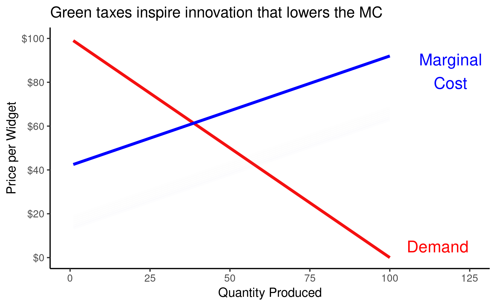
Designing a tax means using the power of the market to reduce pollution.
Markets move MUCH faster and more efficiently to produce profits than top-down regulators possibly can.
Regulations are hard to design and are inflexible by design
Everyone must hit a certain cap or use a specific technology
While the cap can inspire innovation, technology standards rarely do
For today I gave you a series of readings that aim to pitch you the pros and cons of “green” taxes.
I’d like to explore those arguments, but by focusing on our discussion of gasoline taxes
$5 Gas Tax vs No Gas Cars < 4 miles
I would like you to help me evaluate two policy designs meant to reduce pollution levels in metro Springfield
Option 1: We implement a $5 per gallon gasoline tax
Option 2: We forbid the use of gasoline powered cars for any trip less than four miles long (so public transit, bikes, walking, escooters, electric vehicles)
Talk to the people around you, consider both options and then report back on which plan you think we should implement and why.
REPORT back and DISCUSS
- Which cuts pollution faster?
- Which provides greater flexibility?
- Which policy reinforces inequality more?
- Which policy is cheaper/easier to implement?
Notes
Loris and Williamson (2019) with Heritage - ?
Ewall with Energy Justice Network - ?
Policy Design: “Green” Taxes
Having discussed those two arguments and thought about the gas tax some more, where do you end up on the gas tax vs C&C regulation debate?
- Any early takeaways on how you would decide between these two design options?
Force this discussion
SLIDE : If time remains, discuss the competing national plans
SLIDE : Assignment for Thursday
Assignment for Thursday
Submit to Canvas a real world example of this approach being used to successfully address an environmental problem similar to the one in your project .
Present as an argument : This case shows that addressing environmental problem X can be done successfully using “green” taxes.